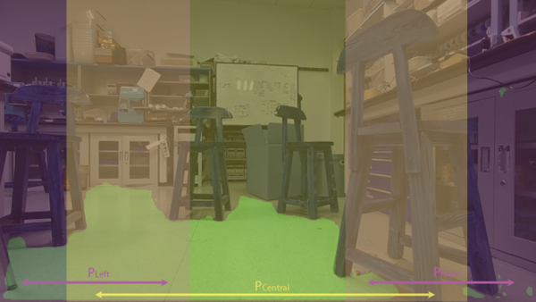
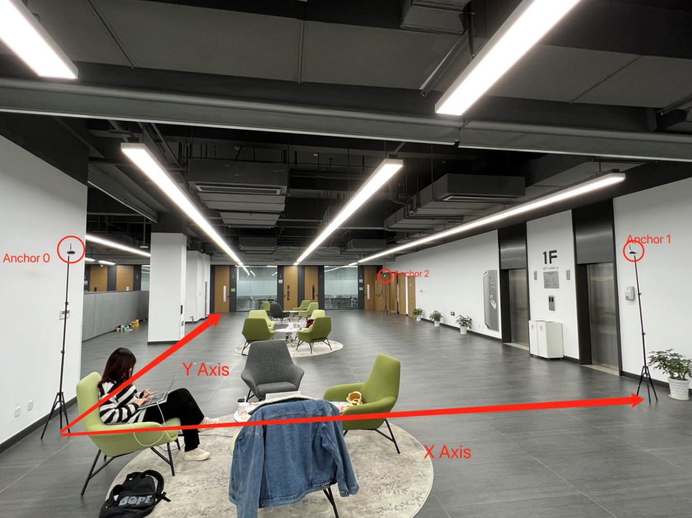

Inherited from the Autonomous Delivery Vehicle project, I used three UWB
anchors and one UWB tag to achieve indoor localization. Meanwhile,
thanks to TensorRT, I accelerated the inference speed of the collision
space segmentation model used in the previous project to 3x. Moreover, I
built an app using swift to enable the remote control between an iPhone
and the vehicle through Bluetooth.
Hardware:
Software:
ROS nodes structures
Segmentation networks
Segmentation Network Structure (R. Fan, H. Wang, P. Cai, and M. Liu,
‘SNE-RoadSeg: Incorporating Surface Normal Information into Semantic
Segmentation for Accurate Freespace Detection’, p. 17.)
It took both RGB image and depth map as input, used ResNet as feature
extraction backbone to extract features at different scales and upsampled
to the original size.
The dataset included 1061 outdoor samples and 512 indoor samples. The
dataset was splited into training/validation/test set in the ratio of
6:2:2.
Segmentation results
The PyTorch model was converted to ONNX then to TensorRT inference engine.
Several inference precision was tested. The performance comparison with
TensorRT acceleration:
Original
FP32
FP16
INT8
Acceleration
18-layers ResNet
2.11
2.54
5.21
6.70
120.38%/246.92%/317.54%
34-layers ResNet
1.71
2.12
4.85
6.34
123.98%/283.63%/370.76%
Frame rate loss
18.96%
16.54%
6.91%
5.37%
After the machine perception results were obtained, the decision on the
steering of the vehicle should be inferred based on the existing
information. To achieve the smooth and safe autonomous operation, the
decision making should satisfy following rules: 1) Always go towards the
direction with both less obstacles and the global target; 2) When there is
not enough empty space in the central front, search possible available
path on two sides and temporarily ignore the global target to bypass the
obstacle; 3) When there is no path available, stop in place.

The path planning was based on local path planning and global path
planning. These two types of path planning will generate steering decision
respectively and finally integrated to get a comprehensive result.
For localization, totally four UWB modules were used, which included three
modules operated as Anchors and one module operated as a Tag. The
localization accuracy test was carried out at Lobby A on the first floor
of IEB, UNNC. The layout of the anchor modules and the coordinate
assignment was shown in Figure below. The anchor modules were installed on
tripods with 2.1meters height and placed at three corners of the room. The
tag module was placed at several different spots within the area enclosed
by the anchors.

The A* algorithm would continuously generate a path from the current
position to the target position as a series of waypoints in the
pre-defined coordinates


 Milestone recording
Milestone recording